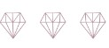

あらゆる方面の外見コンサルティングを行います。
現在対象は女性のみとさせていただいておりますが
内容によっては男性も可能ですのでご相談ください。

外見を磨けば
人生が変わる
プロとともに作り上げる
あなただけのファッションレシピ
12タイプパーソナルカラー診断
骨格診断
顔タイプ診断R
さらに
more up 独自の メソッドをもとに
『一生物の似合うの法則』を
学んでいただきます。
骨格診断
顔タイプ診断R
さらに
more up 独自の メソッドをもとに
『一生物の似合うの法則』を
学んでいただきます。
世界でたった一人の
『あなたらしさ』を大切に
オンリーワンのファッションレシピを
一緒に探しに行きましょう。
『あなたらしさ』を大切に
オンリーワンのファッションレシピを
一緒に探しに行きましょう。
似合うを見つける
4つの診断
12タイプ
パーソナルカラー診断
パーソナルカラー診断

肌・瞳・髪の色と調和する色を見つける診断です。
肌をキレイに見せたり輪郭をすっきり見せる効果があります。
more
upでは従来の4シーズン分類を細分化した12タイプパーソナルカラー(Sci/Artパーソナルカラー)を採用しています。
骨格診断

生まれ持った骨・筋肉・脂肪のつき方からストレート・ウェーブ・ナチュラルに分類し似合う服の「素材」や「形」がわかるスタイルアップ理論です。
ストレート/ウェーブ/ナチュラルの3タイプに分類し似合う着こなしのアドバイスします。ご自身では気づかなかった身体の魅力を発見していきます。
顔タイプ診断

輪郭やパーツの特徴から8タイプに分類する診断です。
ブランド選びや似合う柄、アクセサリーなどお顔立ちに似合うファッションのアドバイスをします。
ブランド選びや似合う柄、アクセサリーなどお顔立ちに似合うファッションのアドバイスをします。
メイクアドバイス

診断結果をもとに魅力を引き出すメイクを学べます。
一度メイクオフしていただきセルフメイクレッスンを行います。 顔タイプ診断Ⓡを受けていただく方のみ受講できます。
よりお似合いになるコスメのご提案にはパーソナルカラー診断も同時に受けられることをおすすめします。
一度メイクオフしていただきセルフメイクレッスンを行います。 顔タイプ診断Ⓡを受けていただく方のみ受講できます。
よりお似合いになるコスメのご提案にはパーソナルカラー診断も同時に受けられることをおすすめします。
お客様の声
B様 22歳

Before
普段メイク

After
レッスン後
実際のLINE

N様 30歳

Before
普段メイク

After
レッスン後
実際のLINE



＼モテ期が来た！／

＼メイク楽しんでます♪／

＼美容院に行ってきました！／
プロフィール

TOMOKO
イメージコンサルタント/more up 代表
年間150名以上の診断実績を持つ魅力を引き出す専門家。
「すべての女性が美しさを持っている」という想いの元、心に寄り添ったアドバイスが得意。タイプ論に当てはめず、お客様の隠れた魅力を引き出し、おしゃれを通して自信あふれる美しい女性へと導きます。
「すべての女性が美しさを持っている」という想いの元、心に寄り添ったアドバイスが得意。タイプ論に当てはめず、お客様の隠れた魅力を引き出し、おしゃれを通して自信あふれる美しい女性へと導きます。
<保有資格>
‧サイアートパーソナルカラーアナリスト(12タイプ)
‧骨格診断アドバイザー
‧顔タイプアドバイザー
‧顔タイプウェディングアドバイザー
‧サイアートパーソナルカラーアナリスト(12タイプ)
‧骨格診断アドバイザー
‧顔タイプアドバイザー
‧顔タイプウェディングアドバイザー

おしゃれに自信がない
自分の容姿に自信がない
そんなあなたにも必ず魅力がある。
もっと自由に、おしゃれを通して素敵な自分を楽しもう!
外見を磨いて人生を変えてみませんか?
自分の容姿に自信がない
そんなあなたにも必ず魅力がある。
もっと自由に、おしゃれを通して素敵な自分を楽しもう!
外見を磨いて人生を変えてみませんか?


企業様からのご依頼も承ります
<実績>
・カラーマスク商品監修
・カフェ診断イベント
・カラーマスク商品監修
・カフェ診断イベント
<対応可能なご依頼>
○出張診断 ○新人研修
○セミナー講師 ○婚活向けコンサルティング 等
○出張診断 ○新人研修
○セミナー講師 ○婚活向けコンサルティング 等
代表:TOMOKO
moreuptomoko@gmail.com
moreuptomoko@gmail.com